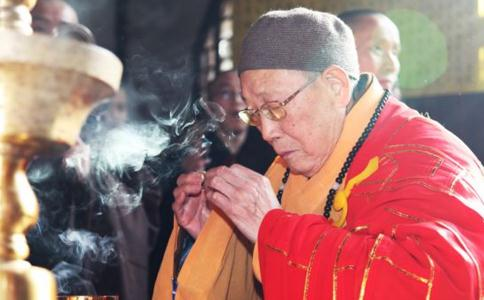

明学长老体型瘦削，风范淡定。2012年5月19日到20日，两天里曾几次见到老和尚，或讲话，或洒净，或主法，乃至跟大家一起慢慢用午膳，可除了会议和法会上的简短讲话，很少看到老和尚开口说话。这个印象非常深刻。慈悲于相，何须言说；淡定示人，尽是佛法。老和尚道心坚固，以印祖为模范，长住灵岩山寺，继承并发展印光大师制订的寺规，弘扬净土法门，为佛教事业贡献甚巨。明学长老恢复并主持弘化社印经事业已十年，仅因“弘化出版”而结佛缘无数。我就是多年的受益者之一。感明学长老恩德，特辑录明学长老“佛事道影”，与有缘读者分享沾益。
【道行感应】
好的道场就是能够成就人，灵岩山好多老法师往生的时候，瑞像都很好，而且都是自知时至，念佛往生！明学老和尚证实这是真的。灵岩山寺的普佛法会几乎每天都有，一般都好几堂一起做的，有时候十几堂，二十几堂，甚至更多的。受印光大师之风范和明学长老德行的感召，加上灵岩山寺的好道风，普佛法会很有摄受力、感染力，许多居士都说山上普佛做得好，佛事很有灵气。明学和尚记得，有个辽宁的居士，带着她的女儿来到灵岩山，说她女儿得了肺癌，花了好多钱，医院已经不接收了，医生说不要花钱了，治不好了。她们从别人那里听说灵岩山上的普佛有灵验，让她们来看看，说不定会好的。她们就抱着最后一线希望，来到灵岩山上打了两堂普佛，并小住了几天。回家后她女儿的病情慢慢好转，直至完全恢复正常。母女俩后来特地打电话，感谢明学长老，说灵岩山的佛事真有灵验……
【衣食住行】
明学长老虽是寺院方丈，居住的房间至今保持着七十年前妙真老和尚住过的样子。屋内唯有旧式的木床、台桌及书架、木凳，没有空调、地毯、沙发、电视，也没有客厅和卫生间。早晨，常见老和尚手提白色的铁皮搪瓷盂，从屋内一步步走向约五十米远的公用厕所。老和尚日常生活全是自理，有时热水瓶没开水，就自己去食堂装灌。老和尚一日三餐，不开小灶，从不特别。饭碗用后，加些热水，摇匀喝下，然后取毛巾擦干，下餐继续用。老和尚每天仅用一瓶热水，洗脸热水用后保留到晚上，加些热水再用。洗脚水也不随便倒掉，或浇花木，或冲盂器，从不浪费。老和尚外出开会，为节省车宿费，常不带侍者。有次在北京机场，穿着陈旧的灰色僧服，独自一人等车，久久不见车来接应。实际上，接他的车几次开到老和尚面前又离开，根本想不到他就是德高望重的中国佛教协会副会长明学法师。
【修持严谨】
明学长老说：做个和尚不容易，一个真正的和尚，一定要有道心，相信因果，遵守戒律，老实念佛。只要自己能做的事，他都是自己做，他牢记印光大师临终前嘱咐妙真法师的话：“维护道场，弘扬净土，不学大派头。”明学长老说，“这是灵岩山寺历任方丈的准则，也是必然要求，不能破坏！不能违背印光大师的遗愿！”老和尚将全寺僧众视作兄弟，不分亲疏，故大家对他非常恭敬。无论是政府官员、名人大师，还是平民百姓，都可直接亲近他，老和尚都以慈祥的平等心予以接待，绝不许身边人阻挡。很多信众要求寺院作梁皇、水陆等经忏，老和尚均未接受，劝说来者以参加念佛七或二时功课为好。明学长老以印光大师为榜样，出家始终“独身、素食、僧服。”他把信众供养的钱财全用于佛事上，如印赠佛经善书，修复寺院，塑雕佛像，放生、济贫等等。
【无寿者相】
明学长老不主张佛门祝寿，认为僧人贵在修道，而非寿命。即使有百岁以上寿命，也是幻梦一场。若不修道念佛，觉悟了生死，将枉己寿命。因为僧人不同俗人，即已出家，就该返迷归悟，返妄归真，以示六尘无体，五蕴皆空，复本具佛性而出三界火宅。每年，明学长老总以印光大师为榜样，谢绝各地缁素上山为自己祝寿。即使有人来了，无论是谁，皆自费就餐，绝不设宴。2003年，佛教界和海内外的无数皈依弟子准备为他筹办八十寿诞，遭到他的坚决反对。
【道心坚固】
明学长老25岁出家，始终胸无尘俗，潜心一志，务实修道。1980年元月重返灵岩山寺，不畏艰难，振兴印光大师遗风，庄严净土道场，次第修复、贴金被“文革”破坏的佛殿、佛像及诸法器。为了绍隆佛种，培育年青僧人，1980年同明旸法师、安上法师创办中国佛学院灵岩山寺分院。明学长老认为：僧伽教育的关键是要看有无道心，而不在于学历、文凭的高低。要引导和培养僧人发道心，最终将佛陀本怀铭刻在心。所以，佛学院的建设，寺院的建设，关键还是要看僧人有无道心、道场有无道风。办学至今，已为全国各地寺院输送了七百余名僧才，有的任著名寺院方丈，有的担任地方佛学院院长、教授，有的被中国佛教协会派往海外留学和弘法。
【慈悲为怀】
慈善的本质是回报社会和利益大众，十方来，十方去，身为佛门弟子，自身首先要勤俭节约，清净修持，慈悲为怀。老和尚说：行慈善不在于捐多捐少，关键是量力而行。有一次，苏州市民族宗教局到灵岩山寺，动员寺院为少数民族困难户尽点心意。明学长老带头，自己拿出2万，代表常住拿出20万。为帮助老年僧众能安度晚年，念佛求生净土佛国，明学长老亲自筹资在山下创建佛教安养院，已建有约三百床位的房间。而报名申请入住的老年人超过三千。明学长老只好先让85岁以上的高龄老和尚入住。明学长老时常呼吁各地寺院，应当发心创建佛教安养院，关心老年佛教徒！
【弘法理念】
（1）出家人是如来家业的荷担者，适应社会和发展经济，都不能忘记自己的根本，发道心，正道风，内强素质，外树形象，是当务之急。（2）佛学院的建设，寺院的建设，关键要看僧人有无道心、道场有无道风。（3）慈善是回报社会和利益大众的，行慈善并不是一定要捐出多少，开展慈善也要量力而行。（4）佛法的弘扬要以宗派为依据，佛教的教育也要有所侧重和以宗派为依据。（5）当今出家人要切记，来自十方信众的供养，是用以安心、养道的，钞票不可没有，但要适可而止。（6）净土道场，依印光大师的祖训：专一念佛。（7）灵岩山寺无论方丈、当家和法师，一律不收出家徒弟。常住僧人全部来自四面八方，保持十方丛林的本色，避免僧人在丛林里拉帮结派。（8）寺院内严禁商贩设摊，禁止车辆通行。灵岩山寺是清净的念佛道场，是供十方信众上山念佛了生死的。（9）灵岩山寺做普佛法会但不做经忏。明学长老告诫：做经忏佛事不是个坏事情，也是弘法的方便，是佛陀慈悲度众的本怀，但要注意不要片面追求钞票。